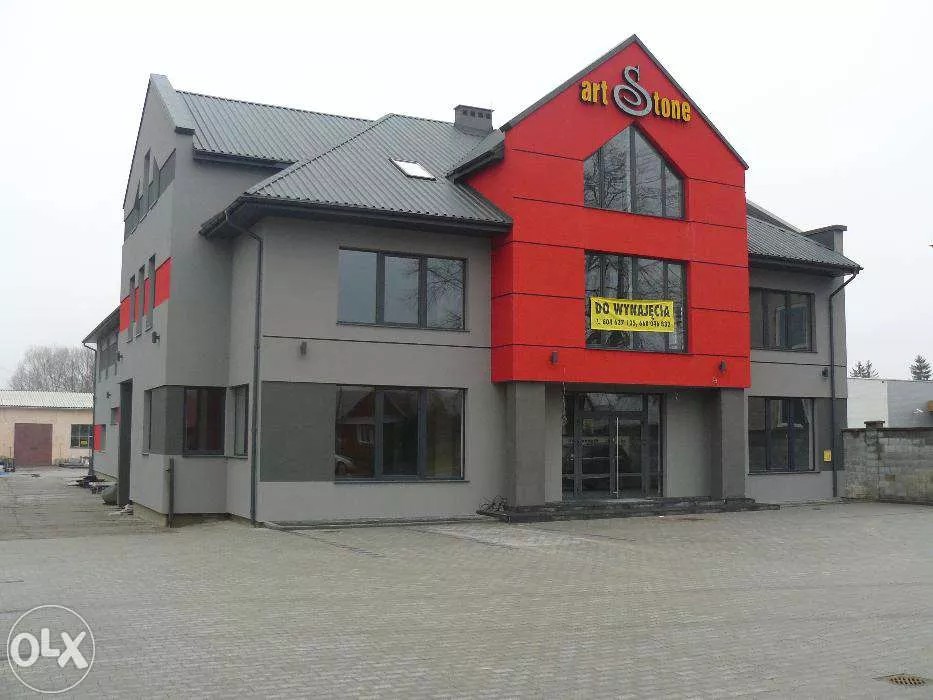

O firmie
Od 45 lat świadczymy nagrobkowe usługi kamieniarskie na terenie Krakowa i całej Małopolski. Łączymy wielopokoleniowe doświadczenie w rzemiośle z
nowoczesną technologią. Produkujemy nagrobki i grobowce z granitu wg wzorów własnych oraz projektów indywidualnych. Korzystamy ze specjalistycznego
oprogramowania CAD do projektowania i wizualizacji 3D nagrobków. Wykonujemy również tablice pamiątkowe i płyty do nisz urnowych. Polecamy także inne
usługi kamieniarskie jak np piwnice grobowcowe i pomniki. Zajmujemy się produkcją nagrobków granitowych, grawerowaniem tablic, rzeźbą, kuciem,
złoceniem, montażem docelowym. Wykonujemy również elementy budowlane z kamienia naturalnego: parapety, schody, tarasy itp. Do produkcji wykorzystuj
